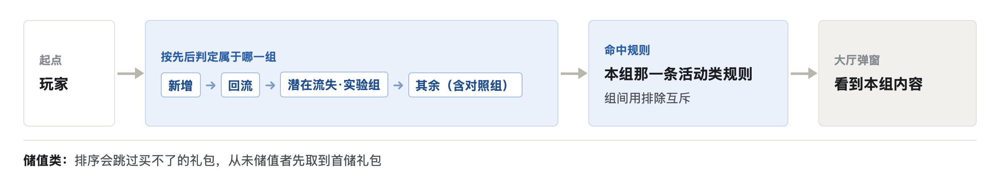
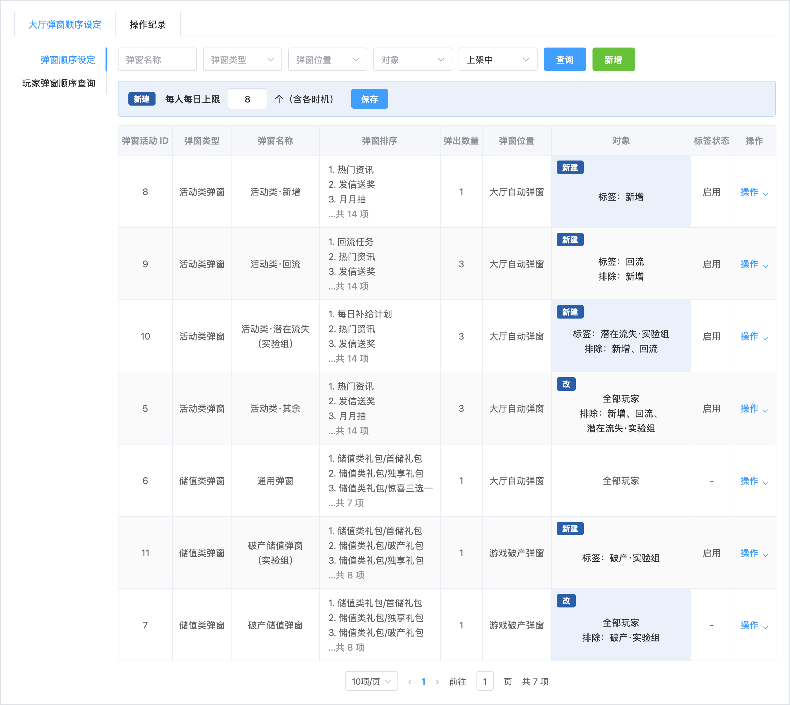
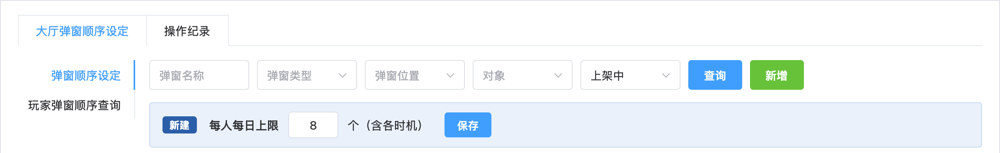
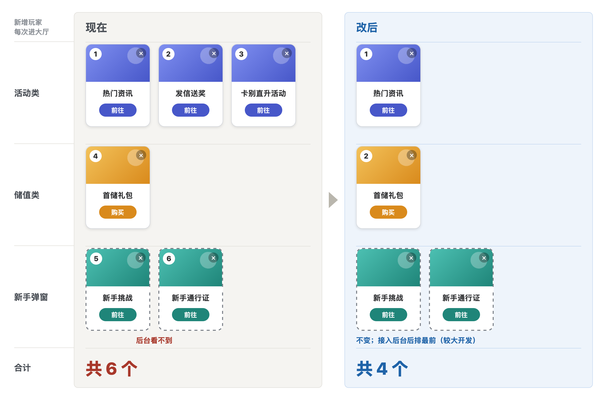
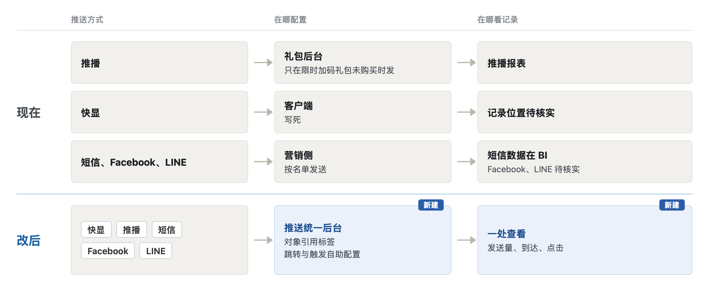
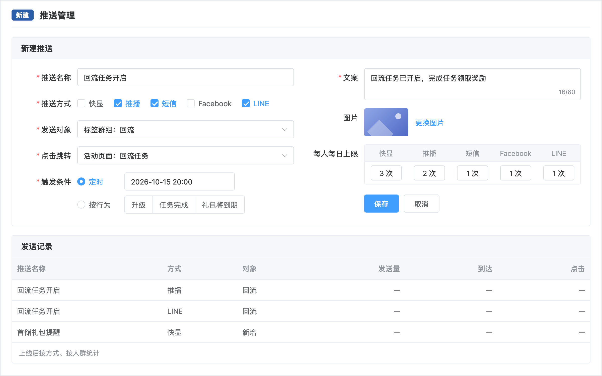
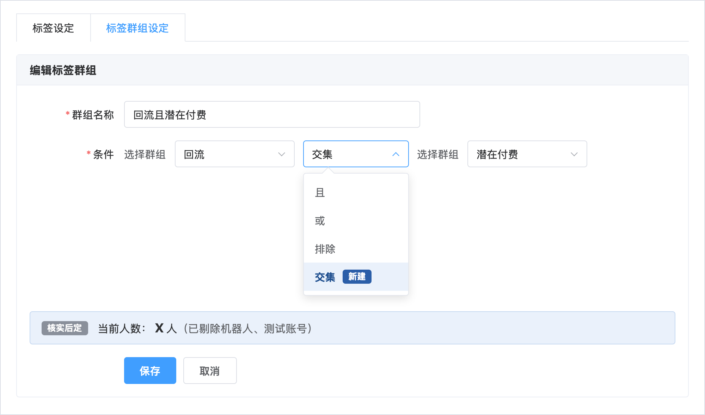

回答「该如何做」。第一块是进入 V4 的缩略，下面五节是依据。
V4 缩略
1活动弹窗分四组：按先后判定组别，每人只命中本组一条规则


改后上架 7 条：活动类 4 条按人群互斥；储值类通用沿用；破产储值 2 条（实验组新建 1 条，原规则排除实验组）。顶部「每人每日上限」一栏需开发（见 02）
组间用排除互斥
回流组排除新增
潜在流失实验组排除新增、回流
其余组排除新增、回流、潜在流失实验组
对照组看到的与改前相同
潜在流失对照组留在其余组；
破产对照组留在原破产储值规则
配置后抽查
用玩家弹窗顺序查询，每组抽查几名玩家
只命中本组规则
对应差距各组顺序单独设定 · 同属两类只看一套（按新增、回流、潜在流失实验组的先后只进一组）
2五类人群首版内容：新增少弹，回流先看回流任务，潜在流失与破产组内对照
| 人群 | 位置 | 改前看到 | 改后看到 | 对应差距 |
|---|---|---|---|---|
| 新增 | 大厅自动弹窗 | 活动 3 个＋储值 1 个＋新手弹窗 2 个， 共 6 个 | 活动弹 1 个，储值与新手弹窗不变， 共 4 个 | 新增少弹 |
| 回流 | 大厅自动弹窗 | 回流任务排活动类第 7； 前面取满 3 个就轮不到 | 回流任务排第 1，活动仍弹 3 个 | 回流先看回流任务 |
| 潜在付费 | 大厅、破产弹窗 | 储值位、破产位都先取首储礼包 | 沿用，不另建规则 | 潜在付费先看首储礼包 （现已做到） |
| 潜在流失 | 大厅自动弹窗 | 与其余玩家相同； 每日补给计划排活动类第 8 | 实验组：新建一条活动类规则，每日补给计划排第 1 对照组：留在其余组，沿用 | 潜在流失一组先看补给计划 |
| 破产 | 游戏破产弹窗 | 已付费者先取独享礼包； 破产礼包排第 3 | 实验组：新建一条破产储值规则，破产礼包提到第 2 对照组：原规则排除实验组，沿用 | 破产礼包提到第 2 |
| 其余 | 全部位置 | 现有 3 条规则，对象为全部玩家 | 内容沿用；活动类对象排除新增、回流、潜在流失实验组 | 其余沿用 |
蓝字为改动。排序与弹出数量为首版建议配置，运营按活动开放期调整；实验组与对照组比较曝光、点击后定。
3推播、短信按标签发送
发送对象取五类人群的标签名单，与弹窗同一套人群
替代办法：短信按标签导出名单，交营销侧发送
推播：能按标签发送则直接选，不能则等推送统一后台
对应差距 按标签人群发送
4新建潜在付费、潜在流失标签
潜在付费：从未储值，近 14 天押注不低于 20,000
潜在流失：注册满 28 天、近 7 天有登录
第 15–28 天登录不少于 4 天，近 14 天 2–3 天或 1 天，分两档
对应差距 新建两类标签
5效果按人群汇总
弹窗曝光、点击，推播傳送、曝光、開啟，按五类人群统计
短信按发送对象中一定时间内登录的人数统计，时长由运营设定
对应差距 曝光、点击按人群查 · 推播、短信效果按人群查
6组内随机对照
潜在流失、破产组内随机分实验组与对照组，比较两组曝光、点击
替代办法：按玩家 ID 尾数奇偶建潜在流失实验组、破产实验组子标签；实验分流能直接配置时改用分流
对应差距 组内随机分两组
1每人每日弹窗上限：弹窗后台加一栏，一天最多弹几个一处设定弹窗后台 · 小改动

改什么
每人每日最多弹几个，含各时机；超出后当日不再弹，按排序截断
对应差距
每人每日最多几个
2新手弹窗接入后台：新手挑战、新手通行证计入弹出数量，后台读得出客户端 · 较大开发

现有功能把活动类由 3 个减为 1 个，共 4 个，新手弹窗不变；接入后台后新手弹窗排最前，4 个都在玩家弹窗顺序查询里读得出
改什么
两项改由弹窗后台配置时机、次数、对象与先后；计入新增组弹出数量
对应差距
新手弹窗计入数量
3推送统一后台：五种推送一个后台配置，对象引用标签，效果一处查推送统一后台（新建）· 较大开发


| 项 | 改什么 | 对应差距 |
|---|---|---|
| 推送统一后台 | 五种推送在一个后台配置，发送对象引用标签群组；快显改由后台下发 发送量、到达、点击按方式、按人群一处查；推播报表并入；短信另看登录人数 | 五种推送一处配置 按标签人群发送 |
| 跳转与触发自助 | 文案、图片、点击跳转运营自助； 触发条件可选定时或按行为（升级、任务完成、礼包将到期） | 内容、跳转、触发自助 |
| 每种方式每日上限 | 每种推送每人每日最多几条；各方式相加即每人每日最多几条 | 每人每日最多几条 |
4群组交集：已建群组可直接取交集，不必拆回标签重建会员标签设定 · 小改动

底部「当前人数」一栏即核实后定的人数预览（见 03）
改什么
群组条件可选另一群组，取交集；且、或、排除沿用
对应差距
群组之间取交集
| 项 | 核实没有时改什么 | 代替办法 |
|---|---|---|
| 标签人数预览 | 标签、群组保存前显示人数，剔除机器人、测试账号 | 用标签 SQL 查人数 |
| 口径说明 | 每个标签写明来源、时间窗、门槛 | 写进标签说明文档 |
| 变更记录 | 记录谁在何时改了什么 | 改口径时在说明文档记日期与改动 |
| 引用清单 | 列出引用该标签的弹窗规则与推送 | 弹窗规则列表按「对象」筛选 |
| 快显、Facebook、LINE 效果记录 | 补发送、点击记录，按人群可查 | Facebook、LINE 由营销侧按次导出； 快显随推送统一后台补记录 |
对应差距人数预览 · 口径说明 · 变更记录 · 引用清单 · 快显、Facebook、LINE 效果（各对应同名一项）
替代办法：组内随机按玩家 ID 尾数建子标签；按标签发送用短信导出名单
前置：短信、Facebook、LINE 需营销侧接入；限时加码礼包推播要迁移
需开发 6 项（小改动 2、较大开发 4）即阶段 3 判为缺功能的 6 项；发送量、到达、点击一处查并入推送统一后台
核实后定 5 项可用 SQL、说明文档、营销侧导出代替，核实没有则按小改动做；后续建议两项要五种推送都在一个后台发送后才能合计
| 改动 | 前置条件 | 主要风险 | 怎么确认做到 |
|---|---|---|---|
| 活动弹窗分四组 | 对象可用排除；两类新标签与实验组子标签已建好 | 分组有漏或重叠时， 重叠者叠加弹出 | 顺序查询抽查各组 只命中本组规则 |
| 新建两类标签 | 按定义写好 BigQuery 脚本， 潜在流失分两档 | 门槛不合适时圈得过宽或过窄 | 建标签时用 SQL 看人数， 按人数调门槛 |
| 组内随机对照 | 实验分流可配置， 或按玩家 ID 尾数建子标签 | 不能分组时只能前后比较， 内容与活动开放期的影响分不开 | 两组各自拉得出曝光、点击 |
| 每人每日弹窗上限 | 弹窗后台可加全局设置 | 上限过低时，排序靠后的活动曝光下降 | 事前读得出各组 每人每日最多几个 |
| 新手弹窗接入后台 | 查清两项写死在客户端的原因 | 改造期间新增玩家看到的弹窗会变 | 顺序查询里看得到新手弹窗 |
| 推送统一后台 | 短信、Facebook、LINE 需营销侧接入 | 开发量最大；限时加码礼包推播等 现有推送要迁移 | 每条推送查得到发送量、 到达、点击 |